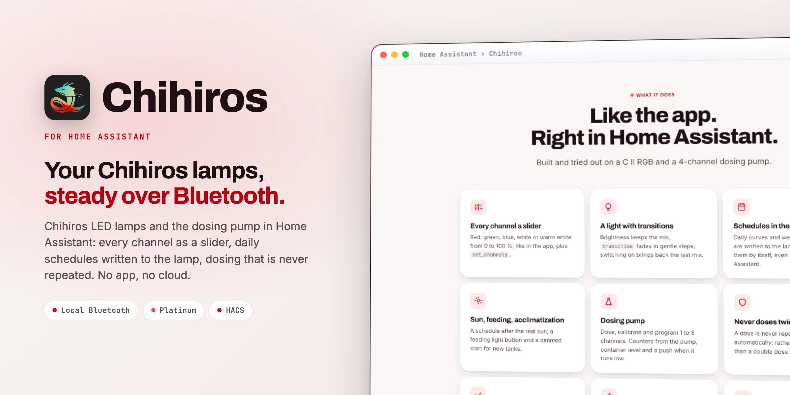

Chihiros lamps and dosing pump in Home AssistantChihiros-Lampen und Dosierpumpe in Home Assistant
Chihiros talks to Chihiros LED lamps and the dosing pump through Home Assistant's Bluetooth and ESPHome proxies: every channel as a slider, daily schedules written to the lamp, dosing that is never repeated. No app, no cloud.Chihiros spricht über das Bluetooth von Home Assistant und ESPHome-Proxys mit Chihiros-LED-Lampen und der Dosierpumpe: jeder Kanal ein Regler, Tagesabläufe direkt in der Lampe, Dosieren, das nie wiederholt wird. Ohne App, ohne Cloud.

Just arrivedGerade neu
Besides the C II RGB, the integration now speaks to all LED lamps that use the same Bluetooth protocol.Neben der C II RGB spricht die Integration jetzt mit allen LED-Lampen, die dasselbe Bluetooth-Protokoll nutzen.
A II, WRGB II, Pro and Slim, VIVID III, Universal WRGB, SEA_LED, Terrarium Egg, Z Light TINY and Commander 1, 4 and X, detected by their Bluetooth name.A II, WRGB II, Pro und Slim, VIVID III, Universal WRGB, SEA_LED, Terrarium Egg, Z Light TINY sowie Commander 1, 4 und X, erkannt am Bluetooth-Namen.
Brightness, RGB or RGBW, as the lamp has them. Sliders, set_channels and schedules follow the channels of each model.Helligkeit, RGB oder RGBW, wie die Lampe sie hat. Regler, set_channels und Tagesabläufe richten sich nach den Kanälen des Modells.
Fan speed or automatic by temperature, plus fan speed and temperature sensors.Lüfterstufe oder automatisch nach Temperatur, dazu Sensoren für Drehzahl und Temperatur.
One schedule for every day, written again after a power cut so auto mode keeps running.Ein Ablauf für alle Tage, nach einem Stromausfall neu geschrieben, damit der Auto-Modus weiterläuft.
Releases count year.month.number: 26.10.3 is the third release of October 2026.Releases zählen Jahr.Monat.Nummer: 26.10.3 ist das dritte Release im Oktober 2026.
Everything that changed, release by release: the changelog.Alles, was sich geändert hat, Release für Release: das Changelog.
What it doesWas sie kann
Built and tried out on a C II RGB and a 4-channel dosing pump.Gebaut und ausprobiert an einer C II RGB und einer 4-Kanal-Dosierpumpe.
Red, green, blue, white or warm white from 0 to 100 %, like in the app, plus set_channels.Rot, Grün, Blau, Weiß oder Warmweiß von 0 bis 100 %, wie in der App, dazu set_channels.
Brightness keeps the mix, transition fades in gentle steps, switching on brings back the last mix.Helligkeit behält die Mischung, transition blendet sanft, Einschalten bringt die letzte Mischung zurück.
Daily curves and weekday schedules are written to the lamp, which runs them by itself, even without Home Assistant.Tageskurven und Wochentags-Abläufe landen in der Lampe, die sie selbst abspielt, auch ohne Home Assistant.
A schedule after the real sun, a feeding light button and a dimmed start for new tanks.Ein Ablauf nach der echten Sonne, ein Knopf fürs Fütterungslicht und ein gedimmter Start für neue Becken.
Dose, calibrate and program 1 to 8 channels. Counters from the pump, container level and a push when it runs low.Dosieren, kalibrieren und programmieren für 1 bis 8 Kanäle. Zähler aus der Pumpe, Füllstand und ein Push, wenn es knapp wird.
A dose is never repeated automatically: rather an error message than a double dose.Eine Dosis wird nie automatisch wiederholt: lieber eine Fehlermeldung als doppelt dosiert.
The first contact runs in the background after Home Assistant has started.Der erste Kontakt läuft im Hintergrund, nachdem Home Assistant gestartet ist.
One connection at a time, a hard time limit and disconnect after 15 seconds idle.Eine Verbindung nach der anderen, eine harte Zeitgrenze und Trennen nach 15 Sekunden Leerlauf.
Reachable with the last error, signal strength, last contact, firmware and a download without the Bluetooth address.Erreichbar mit letztem Fehler, Signalstärke, letzter Kontakt, Firmware und ein Download ohne Bluetooth-Adresse.
Supported devicesUnterstützte Geräte
Tested on hardware: C II RGB and the dosing pump. The other lamps are supported from the protocol documentation but not tested on hardware yet. Please report how yours behaves.An echter Hardware getestet: C II RGB und Dosierpumpe. Die übrigen Lampen sind nach der Protokoll-Doku unterstützt, aber noch nicht an Hardware getestet. Bitte melde, wie sich deine verhält.
C II RGB (red, green, blue) and the dosing pump with 1 to 8 channels.C II RGB (Rot, Grün, Blau) und die Dosierpumpe mit 1 bis 8 Kanälen.
WRGB II and WRGB II Slim (RGB), A II and Commander X (white), Z Light TINY (white and warm white), Tiny Terrarium Egg (red and green).WRGB II und WRGB II Slim (RGB), A II und Commander X (Weiß), Z Light TINY (Weiß und Warmweiß), Tiny Terrarium Egg (Rot und Grün).
WRGB II Pro, WRGB VIVID III (with fan), Universal WRGB, SEA_LED, Commander 4 and Commander 1 (white, RGB or WRGB, chosen during setup).WRGB II Pro, WRGB VIVID III (mit Lüfter), Universal WRGB, SEA_LED, Commander 4 und Commander 1 (Weiß, RGB oder WRGB, beim Einrichten gewählt).
Heaters and magnetic stirrers are left out on purpose; for those use the original integration. Both use the domain chihiros, so only one of the two can be installed.Heizer und Magnetrührer sind bewusst nicht dabei; dafür gibt es die ursprüngliche Integration. Beide nutzen die Domain chihiros, deshalb kann nur eine von beiden installiert sein.
InstallInstallation
As a custom repository.Als benutzerdefiniertes Repository.
https://github.com/SH1FT-W/chihirosDosing pump: the number of channels is asked and can be changed later with Reconfigure.Dosierpumpe: die Zahl der Kanäle wird abgefragt und lässt sich später über Neu konfigurieren ändern.
No cloud account, no YAML.Kein Cloud-Konto, kein YAML.
Close the My Chihiros app while Home Assistant talks to the device: it accepts only one connection.Die App My Chihiros schließen, während Home Assistant mit dem Gerät spricht: es nimmt nur eine Verbindung an.
Both use the domain chihiros: never install both at the same time. Two old entities stay behind as "no longer provided" (…_last_notification, …_calibrate_pump) and can be deleted.Beide nutzen die Domain chihiros: nie beide gleichzeitig installieren. Zwei alte Entitäten bleiben als „nicht mehr bereitgestellt“ übrig (…_last_notification, …_calibrate_pump) und können gelöscht werden.
Download the latest release, copy its custom_components/chihiros folder into /config/custom_components/, restart Home Assistant and confirm the discovered device.Lade das neueste Release herunter, kopiere den Ordner custom_components/chihiros nach /config/custom_components/, starte Home Assistant neu und bestätige das gefundene Gerät.
Good to knowGut zu wissen
The lamps do not report their channel levels. Home Assistant shows its last command, in auto mode the stored schedule.Die Lampen melden ihre Kanalwerte nicht. Home Assistant zeigt seinen letzten Befehl, im Auto-Modus den gespeicherten Ablauf.
No Bluetooth proxy sees the device any more. Check power, move a proxy closer or free connection slots on it.Kein Bluetooth-Proxy sieht das Gerät mehr. Strom prüfen, Proxy näher stellen oder Verbindungsplätze am Proxy freimachen.
The dose is not repeated, an error appears instead. Check the counter to see whether it dosed.Die Dosis wird nicht wiederholt, stattdessen kommt eine Fehlermeldung. Am Zähler prüfen, ob dosiert wurde.
Not at the same time: both use the domain chihiros. Heaters and stirrers are only in the original integration.Nicht gleichzeitig: beide nutzen die Domain chihiros. Heizer und Rührer gibt es nur in der ursprünglichen Integration.
It speaks the same protocol as the tested C II RGB. Please open an issue with the model and the Bluetooth name and tell how it behaves.Sie spricht dasselbe Protokoll wie die getestete C II RGB. Bitte ein Issue mit Modell und Bluetooth-Namen öffnen und berichten, wie sie sich verhält.
Download the diagnostics (Settings, Devices & services, Chihiros, three dots) and attach them to a GitHub issue. The Bluetooth address is left out.Diagnose herunterladen (Einstellungen, Geräte & Dienste, Chihiros, drei Punkte) und an ein GitHub-Issue hängen. Die Bluetooth-Adresse ist nicht enthalten.
Chihiros
One integration, every lamp, no app.Eine Integration, jede Lampe, keine App.